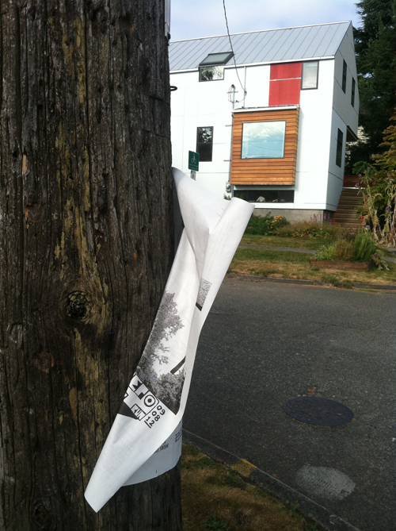

____________________________________________________________
NEPO House is:
- a project space/gallery in my home on Beacon Hill
- an experiment in integration of art into domestic environment
- a homing device for multimedia projects
- a vehicle for collaboration and active participation
NEPO is: OPEN backwards
____________________________________________________________
What others wrote about us:
City Arts Magazine Not Running NEPO 5k
City Arts Magazine - NEPO 5k: Last Saturday's Epic Art Walk
The Stranger - Little (Sometimes Perverted) Anti-Spectacles That Make the World Better for a Minute
The Stranger - What You're Not Wearing: NEPO 5k Edition!!
KING5 New Day Northwest
City Arts Magazine - The Guts of the City
Seattle Magazine - NEPO 5k: Don't Run is Back
City Arts Magazine: Don't Run
The Seattle Times: NEPO 5k Don't Run' takes art walking to great lengths
The Stranger: Hobble, Trek, Stumble, Trot
Artscape on KPLU: On Beacon Hill, a house is both home and public art gallery
Gingham and Gold: Whatever we did, we DIDN'T run
Misc media.: What I did last weekend
ArtSlant: Close Quarters and Simple Chance
ArtSlant: The Recognitions: The Open Klara Glosova
DRIFT - A Magazine of West Coast Cultural Production: Orange Juice from Concentrate
The Stranger: Currently hanging: NEPO House
City Arts Magazine: Here We Stand
Ava Living: From West Coast Home to Artist Collective, An Interview with Klara Glosova
translinguistic other: Leaving the Earth Behind: EP + DG = Drone Chamber at Nepo 3
Best of: NEPO 3: Air, Water, Fire (we will leave the earth behind)
My Heroes Died of Syphilis:NEPO 3: AIR, WATER, FIRE (WE WILL LEAVE THE EARTH BEHIND)
The Stranger: In Art News The House That Is Colonized by Art
The Stranger:The Stranger Suggests for Saturday September 25th, 2010
City Arts Magazine:Nepo House: Where Art Lives (And Don't Pay Rent)
Best of: Free art for the weekend by Joey Veltkamp
City Arts Magazine:7 Illuminating Things from the Weekend
My Heroes Died of Syphilis:NEPO 4 (US) by Amanda Manitach
The Stranger: So Much Local Art It Hurts: Fourteen-14!-Shows
NEPO House is an Associated Program of Shunpike.
______________________________________________________